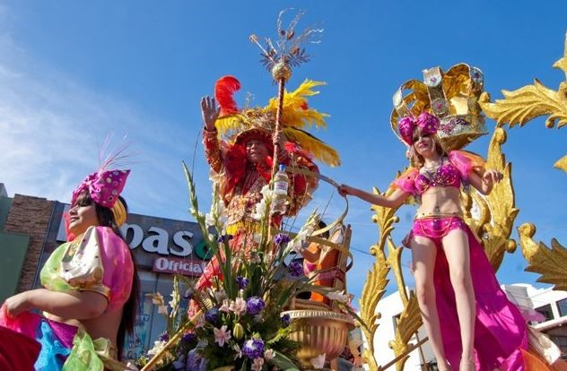
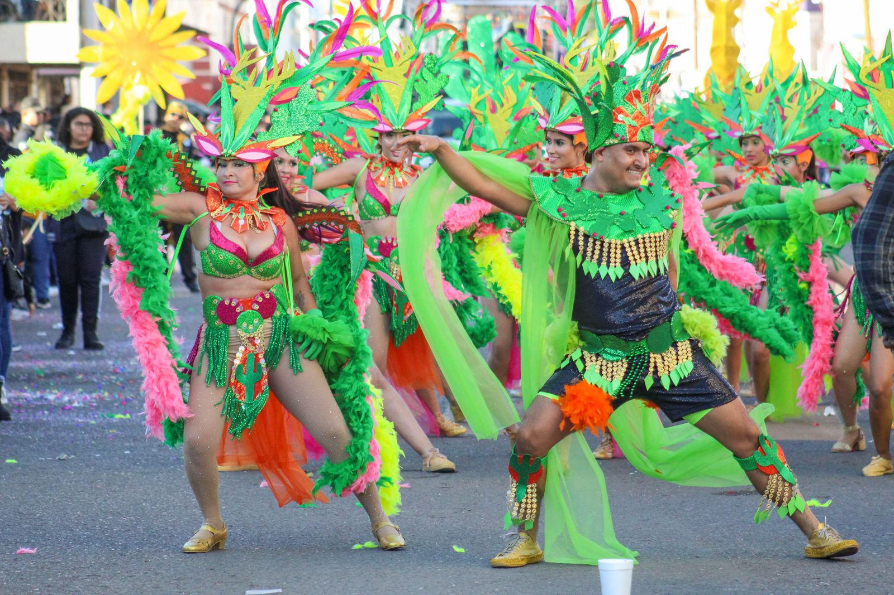

En el noroeste de México, en el estado de Sonora, se celebra una fiesta muy especial conocida como el Carnaval de Guaymas. Este evento, que data desde 1888 en los puertos sonorenses, es considerado uno de los más antiguos e importantes de todo el país.

Durante el Carnaval, se pueden disfrutar de eventos como batucadas, desfiles con carros decorados, bailarines con trajes coloridos, la coronación de los reyes del carnaval y la famosa "Quema del mal humor", una tradición que simboliza dejar atrás los problemas y comenzar de nuevo con una actitud positiva.

Notas relevantes:
La historia de este carnaval se remonta a 1888, cuando era simplemente una fiesta
improvisada, aunque ya contaba con sus propios reyes del carnaval, María Zuber y Alfredo Díaz.